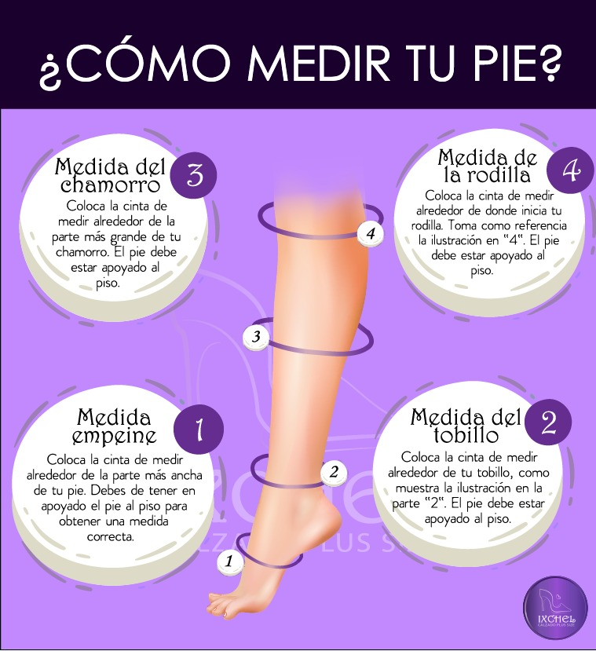

Perfect fit
A pesar de tener garantía de devolución, para tu comodidad revisa estos pasos para asegurar que el calzado queda a tu medida. El vídeo explica como puedes medir tu pie a lo largo y ancho para saber tu talla exacta. No olvides que cada artículo tiene sus medidas en la descripción. La imagen de abajo también ilustra cómo debes medir tus pies y piernas.
